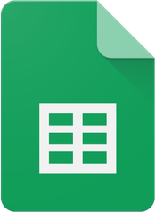
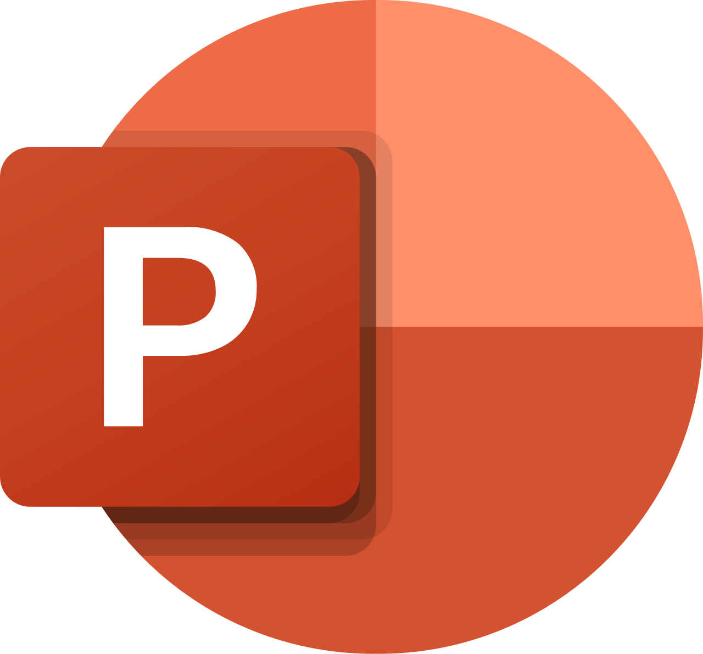
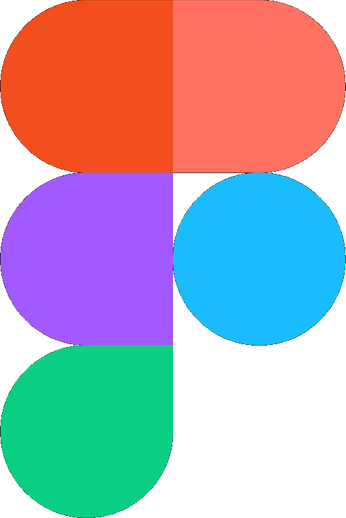
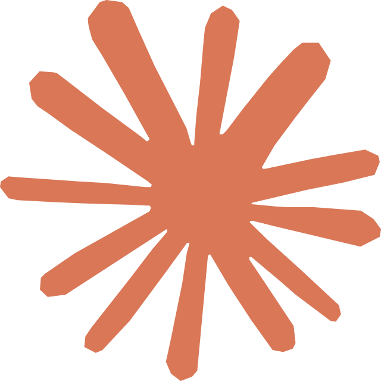

인적사항
Profile
이정현 LEE JEONGHYEON
게임의 튼튼한 토대를 설계하는 시스템 기획자 이정현입니다.
- 성별
- 남 (군필)
- 거주지
- 경기 안산시
- 연락처
- 010-4038-4198
- 학력
-
순천향대학교 청소년교육상담학과 (2016–2023)
한국애니메이션고등학교 컴퓨터게임제작과 (2013–2016) - 경력
- 한국직업능력교육원 안산 직업상담사 (2026.04–2026.05) 떼루아장애인평생학교 평생교육사 (2025.08–2026.01) 서안산IC주유소 일반직원 (2017.02–2018.02)
- 교육경험
- 아직 준비중입니다.
Projects
주요 프로젝트
각 프로젝트에서 맡았던 역할을 정리했습니다.
-
캐주얼 퍼즐 팀장 담당

타일시공마스터 2026.06 – 2026.07
- 게임 컨셉 기획 및 팀 프로젝트 매니징 수행
- 시스템 총괄 기획 업무 수행
- Unity 엔진 활용 및 시스템 구현 업무 수행
-
뱀서라이크 itch.io 출시

컴스톡 2026.07 – 2026.09
- 게임 이미지·애니메이션 리소스 제작 담당
- 시스템 총괄 기획 업무 수행
- AI 파이프라인 활용 리소스 생산 업무 수행
Skills
보유 기술 · 역량
쓸 수 있는 기술을 눌러서 요약과 실제 산출물을 확인하세요.
Excel
참조함수·계산식·조건부수식·데이터유효성검사·VBA

Google Sheets 참조함수·계산식·조건부수식·드롭다운- 함수 및 수식(Lookup, Find, 배열수식 등)을 활용한 데이터베이스 관리 및 자동화
- 데이터 유효성 검사와 조건부 수식을 통한 입출력, 검색 최적화
- VBA와 매크로 기능을 사용한 데이터 테이블 시트 자동화 설계
아직 준비중입니다.

PowerPoint 개체정렬·간격조정·그룹화·도식화 Word 표작성·목차자동화·각주관리
Figma 오토레이아웃·프로토타이핑·실시간협업- 개체 정렬과 간격 맞추기, 그룹화 등 편집 기능을 활용한 정밀한 레이아웃 구성
- 데이터 도식화를 통한 정보 전달의 시각화 및 소통 활성화
- Figma와 PPTX를 활용하여 UI 구성 및 UI 플로우 설계
아직 준비중입니다.
ChatGPT
프롬프트엔지니어링·이미지생성·코드어시스턴트

Claude 바이브코딩·정적웹구현·리팩터링·디버깅 ComfyUI 워크플로우설계·인페인팅활용 Suno AI 배경음·효과음생성- ChatGPT·ComfyUI를 활용해 기획 의도에 맞는 레퍼런스 이미지 생성
- ChatGPT·Claude 기반 바이브 코딩으로 아이디어를 웹 프로토타입으로 빠르게 검증
- 필요시 ChatGPT·Suno AI 등을 활용해 리소스 생산
Unity
Scene구성·Prefab활용·Component조합
- 씬, 게임오브젝트, 컴포넌트 등 Unity 기본 구조 이해
- 객체, 프리팹 생성 및 복제를 활용한 게임 오브젝트 및 UI 구성
- 스크립트의 구조를 읽고 분석하여 기획 의도와 실제 구현 로직 비교 및 검증
아직 준비중입니다.